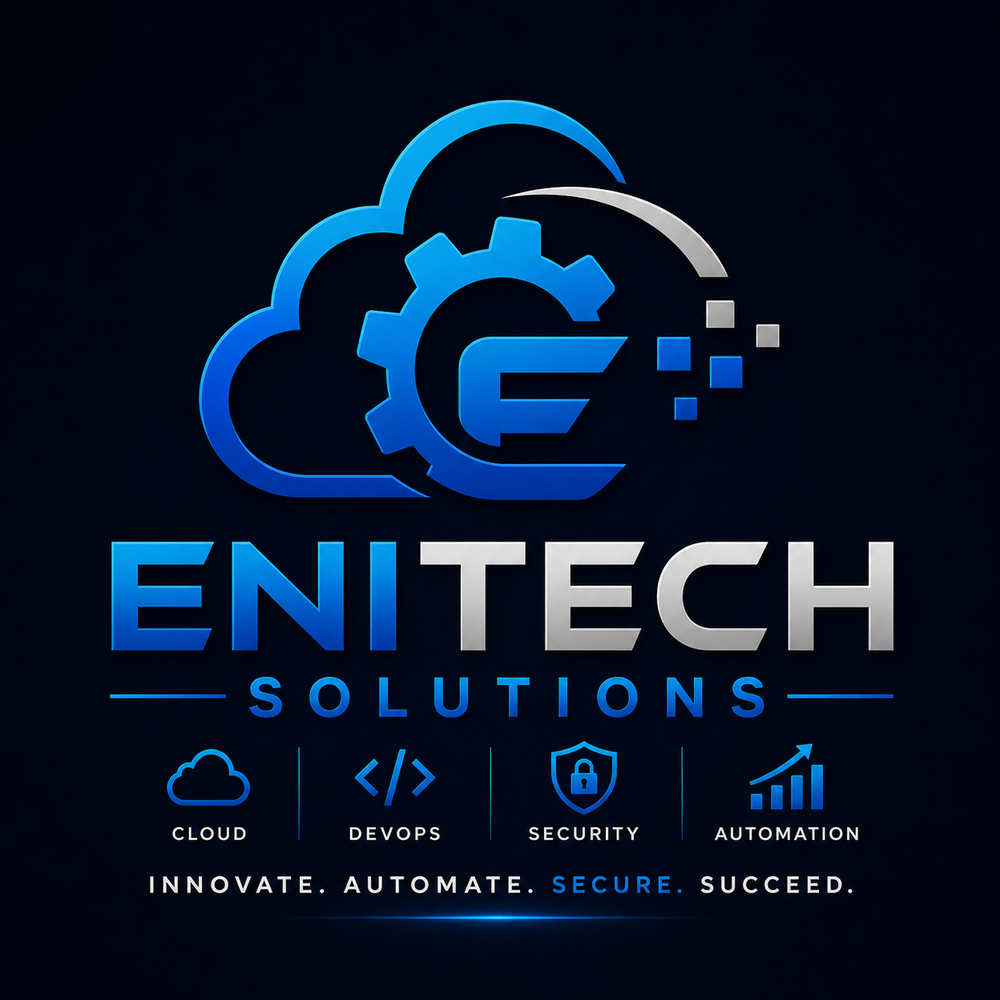

CORE EXPERTISE
Security, cloud and automation
Vulnerability ManagementCybersecurity Compliance
FedRAMP & NISTDISA STIG & CIS
Tenable & NessusLinux & Bash
AWS CloudDocker & Kubernetes
TerraformCI/CD & Jenkins
Git & GitHubSplunk & Monitoring

ENITECH SOLUTIONS
Building secure, scalable and automated technology solutions.
CORE EXPERTISE
SCAN TO CONNECT
Scan with a phone camera. No app required.
MISSION
Enitech Solutions helps organizations improve security, reduce operational risk, strengthen cloud environments and automate repeatable technology processes.
PROFESSIONAL LINKS
Edit these links in index.html.